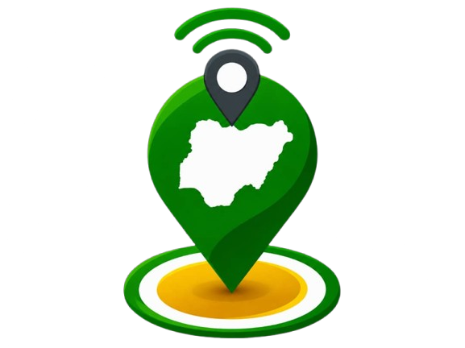
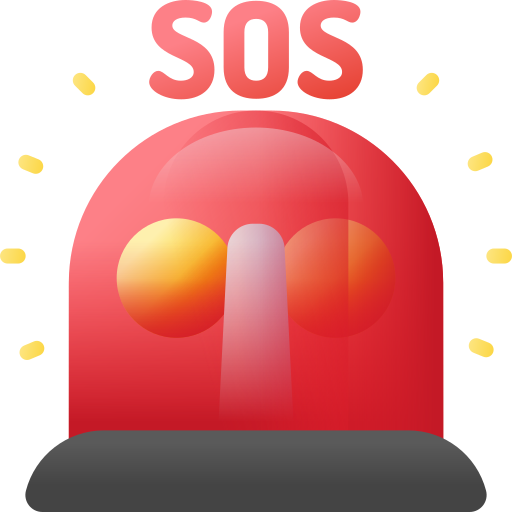

Supporting corps members throughout their service journey.
A connected safety model for NYSC corps members, with movement awareness, safe check-ins, emergency assistance and communication.

Connected support across the service journey.
The supplied document describes the NYSC administrative hierarchy as National Governing Board → Director-General → National Headquarters Directors → Area Office Directors → State Coordinators → Zonal Inspectors → Local Government Inspectors → Corps Members.
It also identifies the six Area Offices as North Central (Minna), North East (Bauchi), North West (Kaduna), South East (Enugu), South South (Asaba) and South West (Osogbo).
The service network in context

Service profile
A connected profile for corps-member safety, service information and authorized support.

People & coordination
A visual reference from the supplied source material for the service ecosystem.

Leadership context
A supplied source image used as contextual material for the NYSC structure.
Institutional context
A supplied source image illustrating the wider service ecosystem.
Tools supporting corps members

Travel & movement monitoring
Support movement visibility and journey awareness.

Safe check-in
Confirm safety at important stages of a journey.

Emergency assistance
Connect a corps member to authorized emergency-support channels.

Emergency communication
Communicate with an authorized support desk.
Connect with FYNDER. Safety starts with connection.
Explore the wider FYNDER platform and its connected safety tools.
Contact FYNDER ↗